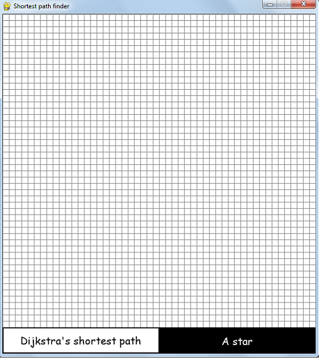
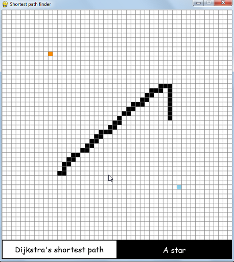

Given a start cell and a destination cell on a grid, find the shortest path from the start cell to the destination cell, if possible. There may or may not be obstacle cells in between the shortest path.
Initially, a blank grid is displayed as shown below.
First mouse left click on any cell changes the cell to be the start cell (the cell color changes to orange). The second mouse left click on any cell changes the cell to be the destination cell (the cell color changes to light blue). Second mouse left click on the start cell won't change it to the destination cell. After choosing the start and the destination cell, mouse left clicks can be used to set up obstacle cells (the obstacle cells are assigned black color). Start and destination cells can't be changed to obstacle cells. An example of how the screen would look like after selecting start, destination and obstacle cells is shown below.
At the bottom of the grid, there are 2 buttons. The left button is to select Dijkstra's single source shortest path algorithm and the right button is to select A star algorithm. White color on a button indicates that particular algorithm is selected. By default Dijkstra's single source shortest path algorithm is selected.
Once the start, destination, obstacle cells and the desired algorithm is selected, press SPACEBAR key to start running the selected algorithm. As the program runs, the cells which are explored are colored green and the cells that are in the min heap are colored red. Shown below is an example of running Dijkstra's single source shortest path algorithm.
Shown below is an example of running A star algorithm.
Start, destination and obstacle cells can be changed to blank cells by using mouse right clicks. Mouse right click on the start or destination or obstacle cell to reset that cell. If you reset the start cell or the destination cell, the next mouse left click on any cell will change the selected cell to be the start or the destination cell. An example shown below.
If you want to reset the grid, that is, change the grid to be a blank grid like the intially screen, press Left CTRL key.
NOTE: Once visualization started, using Left CTRL key, SPACEBAR key, mouse right click and mouse left click won't work until the visualization is completed.
If you want to create a random grid of obstacle cells, press g key. The g key resets the grid and changes every cell to be obstacle cell. Then DFS is used to randomly reset some cells. Then, place the start and destination cell anywhere, select the desired algorithm using the bottom buttons and start the selected algorithm. An example shown below.
Sometimes there can be a situation where there is no path from the start cell to the destination cell. In this case, the algorithm explores all possible cells and stops after all the reachable cells are explored. An example shown below.
DFS can be used. However, to find the shortest path from the start cell, every cell will have to visit all of it's neighboring cells before making a decision on which neighbor to select to minimize the cost of the path from the start to the destination cell which makes it inefficient for this task.
Considering the underlying graph structure to be a directed unweighted graph and using BFS on it will work for this task. The reason why simple BFS is not included in this visualizaton is because of Dijkstra's single source shortest path algorithm which behaves like a simple BFS for this graph structure. This is because neighbors of a cell are connected to the cell with an edge weight of 1. Implementing a simple BFS will change nothing visually and hence, simple BFS is not implemented for this visualization.
I have used the lazy implementation of Dijkstra's shortest path algorithm using a min heap. The implementation is called lazy implementation because of storing outdated tuples in the min heap and then ignoring those tuples once popped from the min heap. However, there are many better implementations of Dijkstra's shortest path algorithm. All of these are explained in a YouTube video I referred to (will be listed under references).
The choice of heuristic determines whether the shortest path found by A star is actually correct. For A star algorithm to find the shortest path, the heuristic function needs to be admissible. A heuristic function is said to be admissible if it never overestimates the cost of reaching the goal, i.e. the cost it estimates to reach the goal is not higher than the lowest possible cost from the current point in the path. Euclidean distance as heuristic function is used for this visualization. For the graph structure used in the visualization, Euclidean distance underestimates the actual distance from a cell to the destination cell. Manhattan distance is also a good heuristic to use for this visualization. For more information, read the article listed under references.